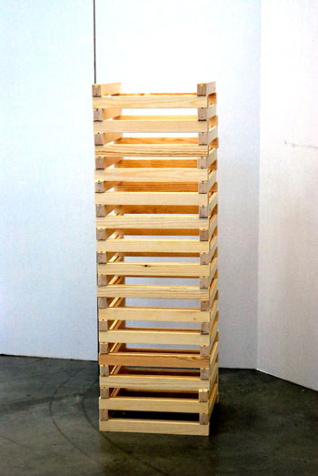

Umeå School of Architecture
2nd semester/spring 2012
Experimental structures
The Jenga Tower
With a starting point from my abstract model (the small model) we were supposed to create a structure that should enhance the structure of the model. The result became a movable structure that gives you endless opportunities to try different shapes and structures. We called it The Jenga Tower
- A tool for structural investigation.
Brief
- Investigation
- Cooperation
- Sliding joints
- Locking system
- Changing structure
- Overlapping systems
Group members
Anna Carlsson, Robert Garcia, Johan Nord and Matti Törngren
